Spa-Bench: A Real-Robot Benchmark for Spatial Grounding in Vision-Language-Action Models
Imperial College London
Abstract
Vision-language-action models (VLAs) offer a promising route toward general-purpose robotics by transferring semantic knowledge from large-scale vision-language pretraining into language-conditioned control. However, most VLA evaluations emphasize aggregate manipulation success under changes in objects, instructions, or environments, leaving unclear how reliably these policies ground spatial descriptions in the physical scenes where they act. We therefore ask a sharper question: how reliably can current VLAs translate spatial descriptions into appropriate real-robot behavior? To investigate this, we introduce Spa-Bench, a real-robot benchmark that evaluates spatial grounding across six tabletop tasks covering Object State, Relative Size, Referential Description, Relational Placement, Ordinal Position, and Counting. Our primary evaluation compares in-distribution (ID) and out-of-distribution (OOD) spatial configurations while retaining training support for the relevant objects, concepts, and actions, reducing object and motor unfamiliarity as alternative explanations for failure. Four diagnostic conditions further probe physical execution, sensitivity to wording, object-task associations, and recognition that no action is required. We release 4,092 episodes collected on the SO-101 robot arm: 1,200 human-teleoperated demonstrations and 2,892 real-robot evaluation rollouts from five state-of-the-art VLA policies. Across the three fully evaluated policies, success falls from 67.5–73.3% on ID configurations to 40.7–52.0% on OOD configurations, while matched direct instructions improve success by 28.3–40.0 percentage points. These results show that the evaluated VLAs can often execute the required manipulations but lack robust spatial grounding. Models, datasets, evaluation rollouts, and supporting spreadsheets are available on Hugging Face.
A widening spatial-grounding gap
Spatial grounding connects a language description to the objects, attributes, and relationships in a scene so that a robot can choose the correct response. Spa-Bench asks whether successful manipulation is accompanied by this scene-grounded understanding.
A direct instruction names the target explicitly. In-distribution (ID) spatial instructions use combinations represented during training; out-of-distribution (OOD) spatial instructions require new combinations of familiar components. All three fully evaluated policies perform best with direct instructions, less well with ID spatial instructions, and worse still with OOD combinations.
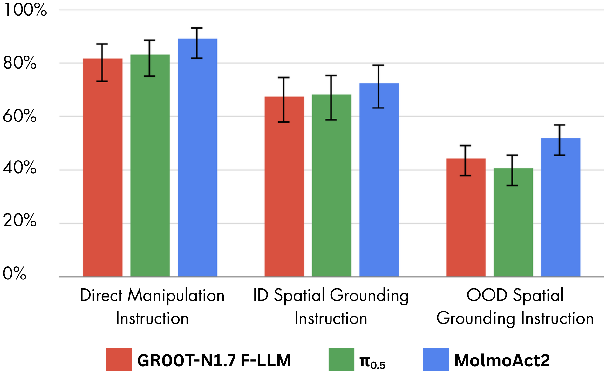
Same scene, different instruction
When a robot fails to follow a spatial instruction, the difficulty may lie in interpreting the scene or executing the manipulation. To distinguish these, Spa-Bench repeats the same scene, intended target, and required motion with two instruction types: one identifies the target through a spatial description, while the other names it directly.
The figure illustrates this comparison. Both rollouts require moving the crushed Coke can into the bowl. Directly naming the Coke can leads to success; asking for the crushed soda can closest to the green pen leads the policy to select the wrong can and fail.
This reflects a broader pattern across 120 matched scenes per policy. Success ranges from 81.7–89.2% when the target is named directly, but falls to 41.7–60.8% when the same scenes require spatial grounding. The models can often execute the manipulation, yet struggle to determine what the spatial instruction requires.
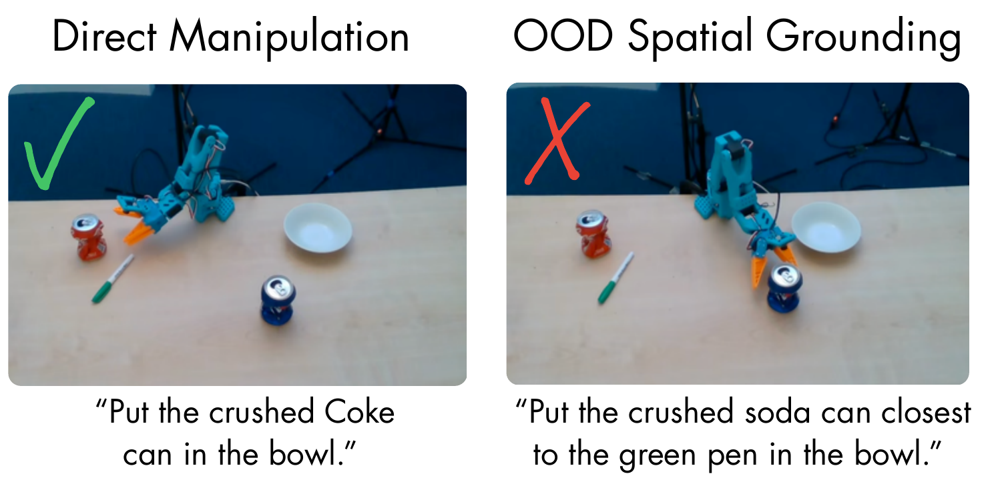
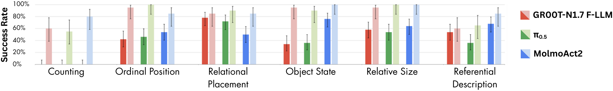
The gap persists under paraphrasing
A policy might struggle with a particular wording rather than the underlying spatial requirement. The paraphrasing diagnostic tests this by restating both spatial and direct instructions while preserving their meaning, the scene, and the intended action.
On a 60-scene subset per policy, direct-manipulation performance remains substantially higher than OOD spatial grounding under both original and paraphrased instructions. Paraphrasing reduces spatial success for all three policies, while its effect on direct instructions varies by policy. The gap is therefore not explained by one particular phrasing.
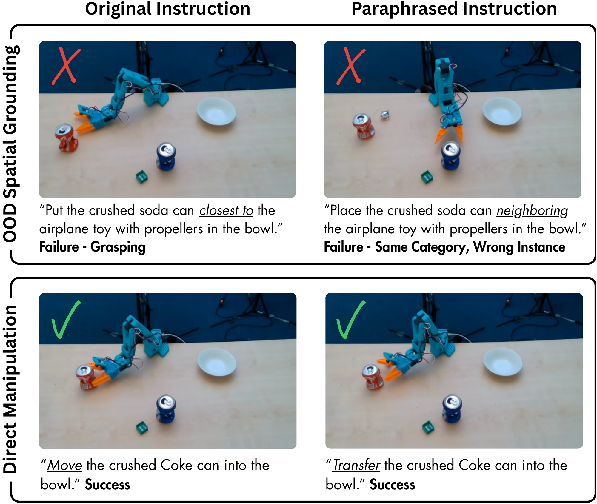
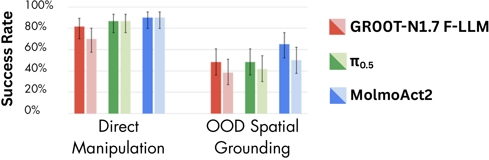
Six ways to test spatial grounding
Spatial instructions can change which object to select, where to place it, or whether to act at all. Spa-Bench covers these decisions through six tasks spanning object attributes, relationships between objects, and scene-level order and quantities. The robot and broad pick-and-place behavior stay fixed, while the information needed to choose the correct response changes.
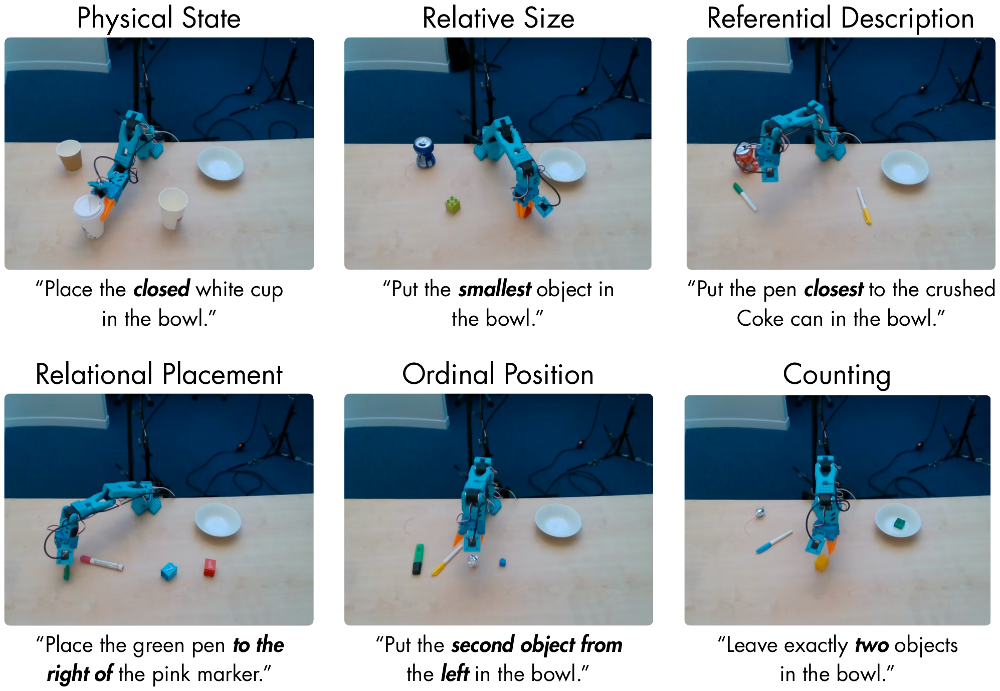
New combinations of familiar ideas
Spa-Bench tests generalization by withholding combinations, not their ingredients. Spatial concepts, objects, and required motions receive training support, but selected combinations are absent from spatially grounded training instructions. We organize these combinations into matrices: observed cells appear in spatial training, while withheld cells are reserved for evaluation.
In the toy example on the left, spatial training pairs yellow with ball and blue with cube. Direct instructions also provide manipulation support for the yellow cube. Evaluation then asks for the yellow cube through a color description: familiar color, familiar object, familiar motion, but a new spatial pairing.
For Object State on the right, a familiar state must identify the correct instance of a familiar object. The policy sees upside-down describe the striped cup and sees the white cup moved under direct instructions. Evaluation then asks it to select an upside-down white cup from an upright and an upside-down instance. The new element is the spatial state–object pairing, not the object or pick-and-place motion. We apply this construction across all six tasks.
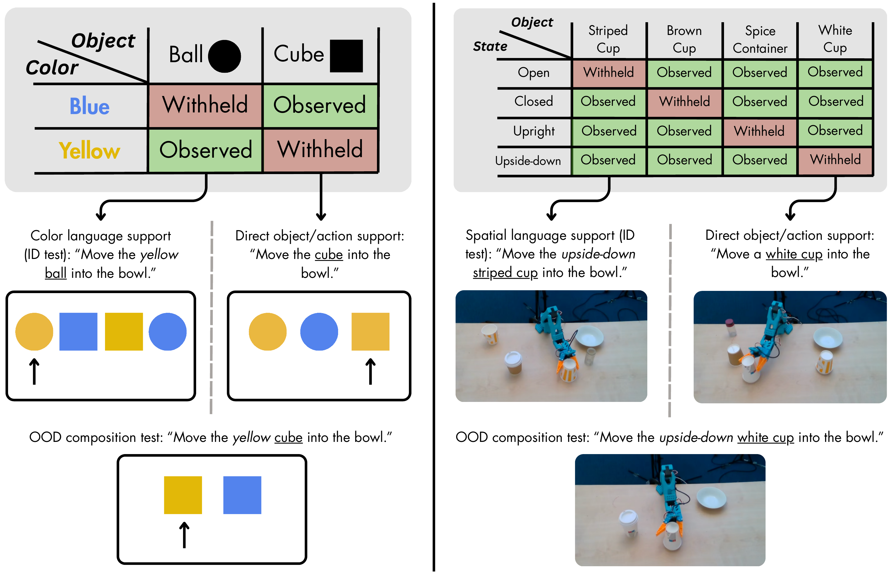
Knowing when not to act
A spatial instruction does not always require movement: its goal may already be satisfied, or the scene may contain no valid target. The no-intervention diagnostic tests whether policies recognize these conditions and correctly withhold action.
Success reaches 80–85% when a Counting goal already holds, but falls to zero in Ordinal Position and Object State, with only 20–24% aggregate success across four tasks. The policies can remain still, but do not reliably decide when stillness is appropriate.
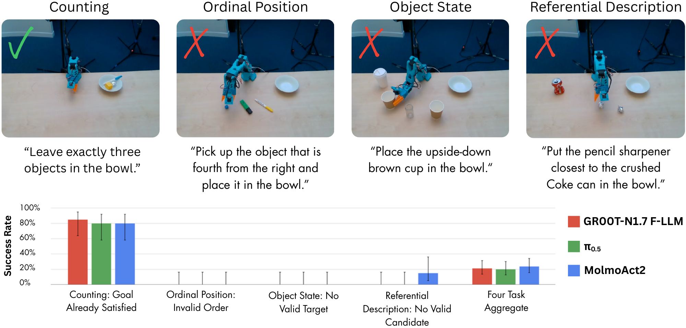
Remaining still can be correct by accident. To distinguish recognition of a satisfied goal from a general tendency not to move, we pair Relational Placement scenes where the requested relation already holds with scenes requiring correction. The same instruction should produce stillness in one scene and movement in the other.
Success reaches 75–95% when no movement is needed, but only 5–15% when correction is required. The policies often stay still whether the requested relation is already correct or not.
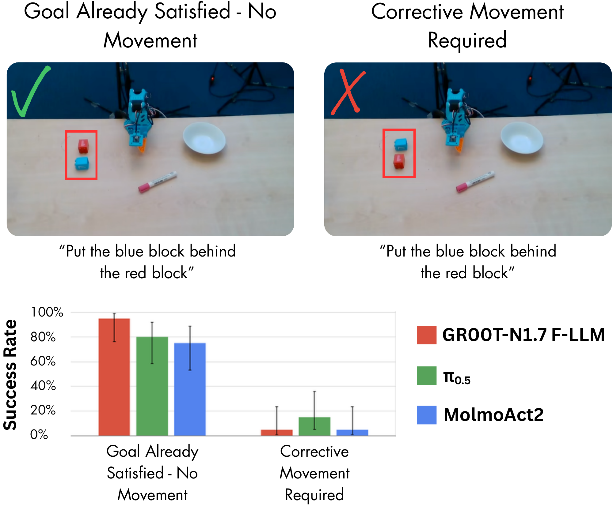
Beyond learned object–task associations
A policy may associate an object with the task or destination it saw during training. The cross-task-object diagnostic asks whether a familiar spatial behavior still works when an object normally used in another task is introduced.
Success falls for all three fully evaluated policies, suggesting sensitivity to learned object–task associations. Yet none defaults to placing the juggling ball in the bowl during Relational Placement, even though that was its only demonstrated goal during training. This suggests some transfer beyond a memorized object–goal association, without reliable success at the requested relation.
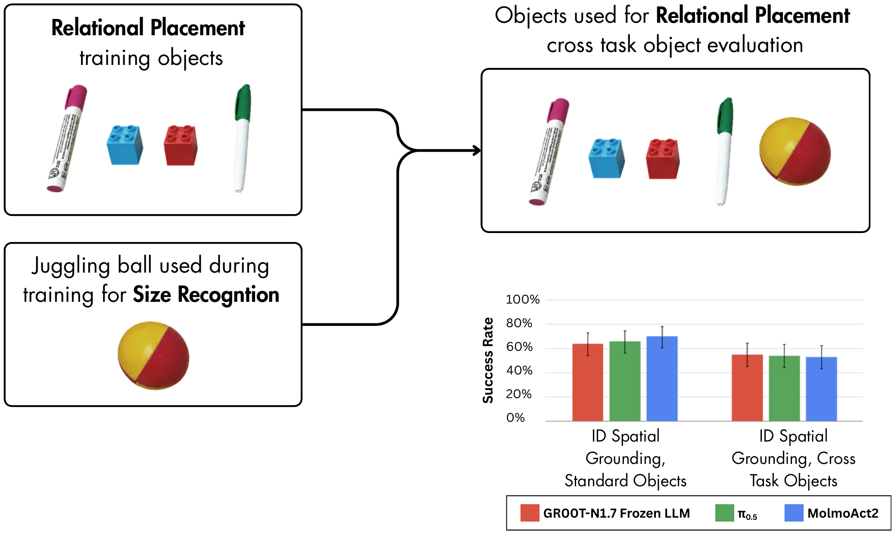
Where the policies break down
A success rate tells us whether a rollout completed the task, but not why it failed. We therefore assign each unsuccessful OOD rollout a primary failure mode. Each bar below shows the mix of errors among failed trials for a task and policy, rather than an overall failure rate.
The dominant error depends on the task. Counting failures are overwhelmingly no-action errors, Ordinal Position often selects the wrong object, Object State frequently chooses the wrong instance from the correct category, and Relational Placement often produces the wrong spatial outcome. There is no single failure mode that explains performance across Spa-Bench.
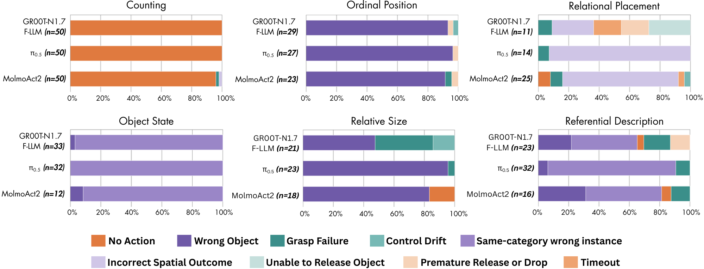
Overall, Spa-Bench shows that successful manipulation does not necessarily imply spatial understanding.
Dataset and evaluation rollouts
The release includes both training demonstrations and autonomous evaluation rollouts. Demonstrations provide examples of the task behaviors; rollouts record how fine-tuned policies respond to the benchmark scenes and diagnostic conditions.
We release 4,092 real-robot episodes: 1,200 demonstrations across the six tasks and 2,892 evaluation rollouts from five policies. Three policies complete the full 900-rollout protocol; two contribute partial ID baselines.
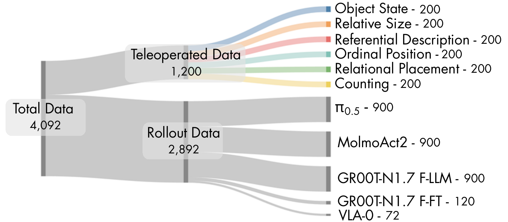
Paper, models, and data
Read the full benchmark design, evaluation protocol, and analysis, or explore the released models and data.